此报告不自动判定通过。先核对数据、状态、主题与缩放，再审阅布局和像素差异；相似度不能代替交互测试。
macOS 左 / Linux 右 · 变化像素 46.84% · 需逐项审阅
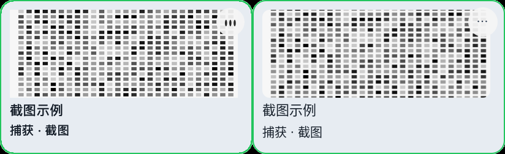
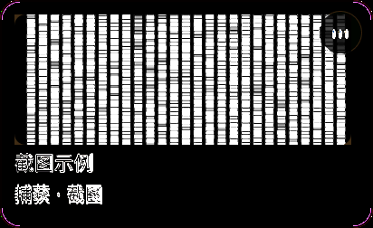
macOS 左 / Linux 右 · 变化像素 49.73% · 需逐项审阅
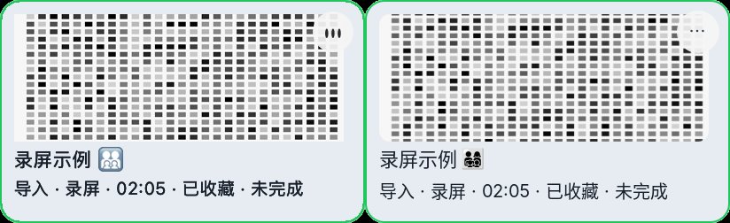
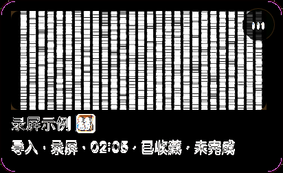
macOS 左 / Linux 右 · 变化像素 89.37% · 需逐项审阅
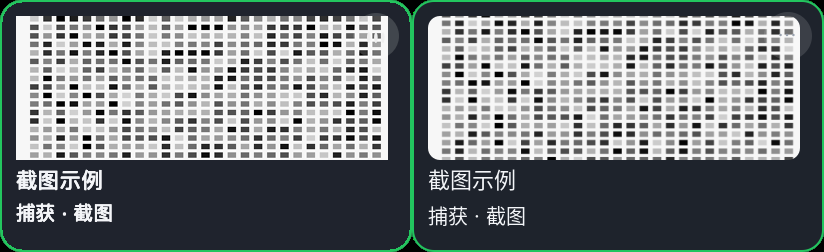
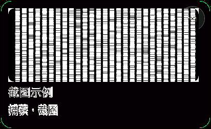
macOS 左 / Linux 右 · 变化像素 89.30% · 需逐项审阅
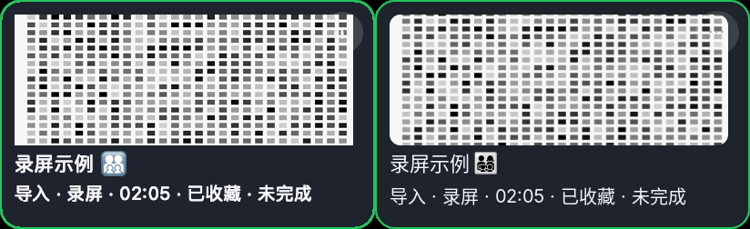
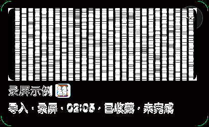
macOS 左 / Linux 右 · 变化像素 44.74% · 需逐项审阅
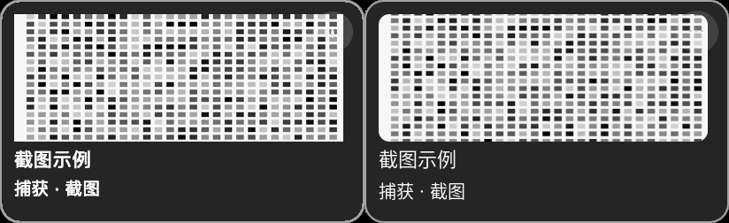
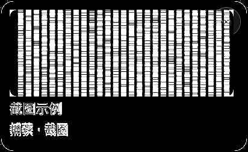
macOS 左 / Linux 右 · 变化像素 47.71% · 需逐项审阅
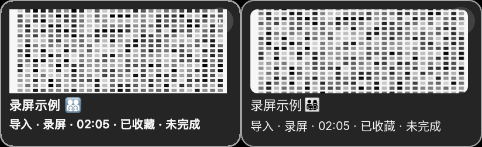
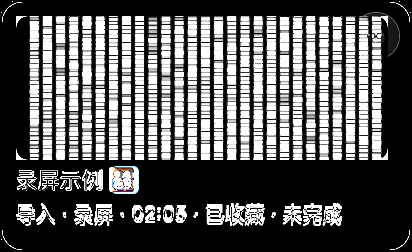
macOS 左 / Linux 右 · 变化像素 47.08% · 需逐项审阅
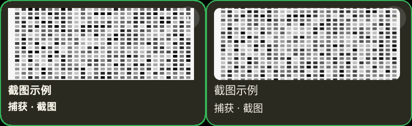
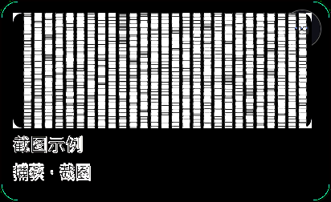
macOS 左 / Linux 右 · 变化像素 50.06% · 需逐项审阅
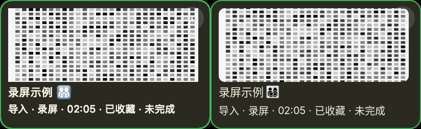
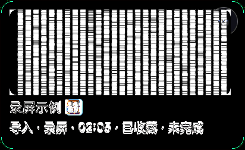